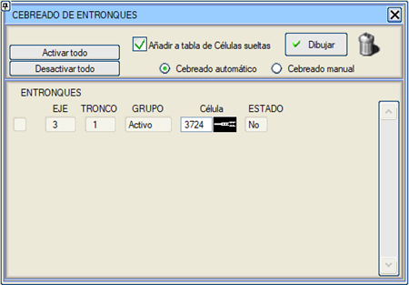
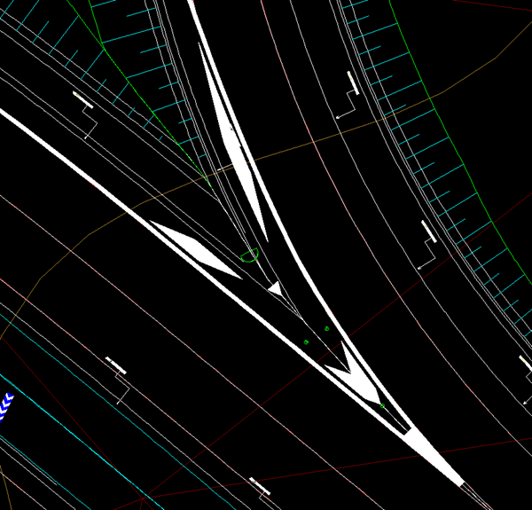
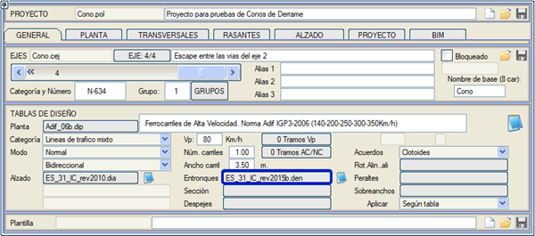
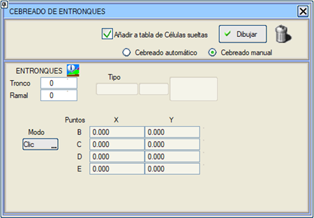
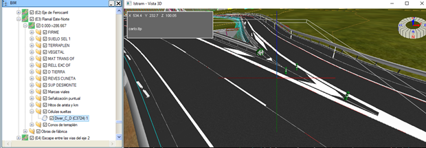

| |
|
KAVŞAK TARAMA ALANLARI
|
Bu araç, projedeki taralı alanların yönetimini sağlar. Tabloda görüntülenen tüm bilgiler VOL dosyasında saklanabilir. 

Kavşak tasarım tablolarında, ayrım ve katılım kavşaklarındaki taralı alanları temsil etmek için iki hücre tanımlanabilir. Bu komutlar ES_31_IC_rev2016b.den tablosuna eklenmiştir. Eğer .den tablosu kullanılmıyorsa veya bu tabloda tanımlanmamışsa, varsayılan olarak ayrım kavşakları için C3724 ve katılım kavşakları için C3725 hücreleri kullanılır. 
Çizimler/Kavşak Tarama Alanları diyalog kutusuna girildiğinde, hesaplanan her bir kavşağın taralı alanını otomatik olarak çizmeyi sağlayan bu dosyalar okunur. Burada kullanılacak hücre tipi de değiştirilebilir. Bu diyalog kutusunda ayrıca, burada çizilen taralı alanları genel Çizimler/Serbest Hücreler tablosuna dahil etme seçeneği de bulunur. Otomatik taralı alan, C.E.E. tipi kavşaklar için uyarlanmıştır (Ana eksen genişletmelerinin C noktasına kadar yapıldığı durumlar). Kavşağın önceden tanımlanmasına veya hesaplanmasına gerek kalmadan taralı alanın konumunu manuel olarak belirtme imkanı. Manuel Tarama seçeneği seçildiğinde, diyalog kutusu bizden şunları ister:

BIM ağacında taralı alanlar: Tanımlandıkları eksen kesiminin bir alt klasöründe görünürler. 
Taralı alan tipi nesneler, otomatik olarak yeni bir nitelik alır: boyalı yüzey alanı. Bu, bu nesnelerin özelliklerinde gözlemlenebilir. |